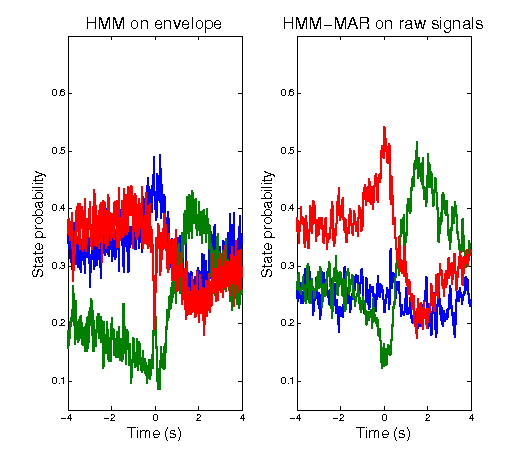
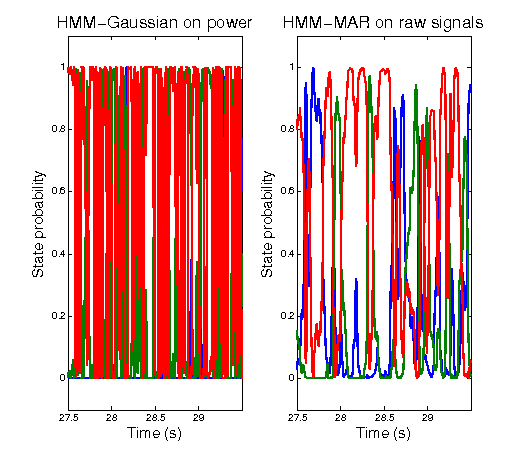
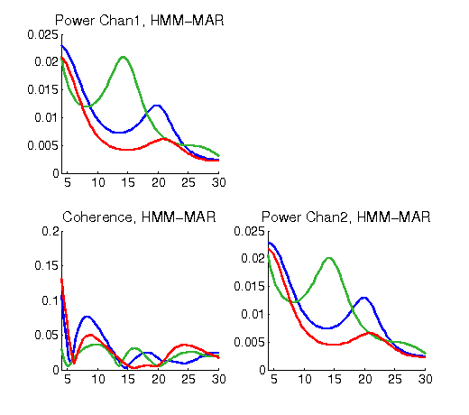
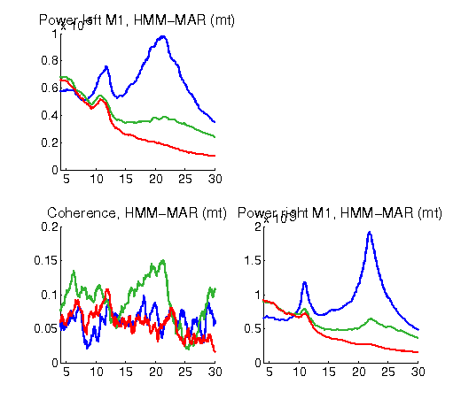

Contents
This example shows how to use the HMM-MAR to infer transient states that:
(i) are spectrally defined, i.e. the characteristics of interest are defined as a function of frequency, (ii) are based on the raw time series, i.e. we do not need to bandpass filter or compute power envelopes, (iii) are not only sensitive to power differences but also to phase coupling.
In particular, this script will estimate a group (spectrally-defined) HMM from MEG task data, using two source-reconstructed regions in the motor cortex (left and right). The task is a finger-tapping motor task, where subjects press a button volitionally. We will see whether, with no prior information of the task during training, the estimated HMM contains states that are temporally related to the task timing, and we will inspect if these states contain meaningful features. We will compare the HMM-MAR estimation with the estimation of an HMM on the power time series (Baker et al, 2014).
The script follows the paper Vidaurre et al. (2016)
% Directory of the data: data_dir = fullfile(osldir,'example_data','hmmmar_example'); % Name for this HMM-MAR analysis: hmmmar_name = fullfile(osldir,'example_data','hmmmar_example','hmmmar_demo.mat'); % Sampling frequency Hz = 200; % Set do_analysis=1 to re-run the analysis, otherwise use precomputed result do_analysis = 0;
HMM-Gaussian on hilbert envelopes
First we are running the HMM on the Hilbert envelopes (or power time series) using a Gaussian distribution as observation model. This is the method established in Baker et al. (2014), but applied in task and in two regions only.
We first need to load and prepare the data. Data, for any variety of the HMM, is usually provided in a matrix (time by regions) with all concatenated subjects. However, if data is too big, we can pass a cell (subjects by 1) where each elements contains the name of the file containing the data for one subject.
% Here, we are going to concatenate data into a single matrix. % We will also need to let the toolbox know the length of each subject's data (within this big matrix). X = []; % data, time by regions T = []; % length of trials, a vector containing how long is each session/trial/subject subjects = [1 2 4 5 6 7 8 9]; % index of the subjects that we are using N = length(subjects); for j = subjects % iterate through subjects file = fullfile(data_dir,['sub' num2str(j) '.mat']); load(file); % load the data sourcedata = sourcedata' ; % data is stored as (channels by time); we need it (time by channels) T = [T size(sourcedata,1)]; % time length of this subject X = [X; sourcedata]; % concat subject end
Prepare the HMM options, where we will configure it to use and run the HMMMAR
options = struct(); % number of states: in general, the higher this number, the more "detailed" will be the segmentation. % (By running the model with different number of states, we could get some sense of "state hierarchy"). options.K = 3; % order=0 corresponds to a Gaussian distribution (adequate for power time series, i.e. Baker et al's approach). % By setting order>0, we will be running the HMM-MAR (see below). options.order = 0; % model connectivity, covtype='full' means that we model the covariance between regions; % otherwise, we would set covtype='diag', such that we would ignore the convariance and would focus on variance. options.covtype = 'full'; % zeromean=0 means that we model the mean, i.e. model the "amount of power"; % zeromean=1 means that we do *not* model the mean. options.zeromean = 0; % standardize each subject such that it has mean 0 and stdev 1; % this is typically done in order to avoid between-subject differences being the main driving cause of the states. options.standardise = 1; % onpower=1 indicates that we will be taking the Hilbert envelopes of the signal (ignoring phase) options.onpower = 1; % number of training cycles, although might stop earlier if convergence is attained. options.cyc = 100; % show progress? options.verbose = 1;
And run the HMM-MAR. Note that the same function will be used for both "HMM-flavours".
if do_analysis % run the HMM-MAR [hmm_env,Gamma_env] = hmmmar(X,T,options); else % load a precomputed run load(hmmmar_name,'hmm_env','Gamma_env') end
Now that we have the HMM model, we shall compute the spectral information of the states (power, coherence, etc). In the case of the HMM-MAR, as we will see below, the MAR parameters themselves contain this spectral information. Here, because we are using a Gaussian distribution on wideband power, we don't know what is happening in the frequency domain when each state is active, above and beyond gross changes in wideband power. For example, in our current HMM estimation there is no information about phase coupling. Hence, we need to estimate this frequency information (including phase coupling), looking back at the data and using the state time courses we inferred. For this, we will be using a weighted version (state-wise) of the multitaper, proposed in (Vidaurre et al. 2016). In brief, this basically weights the data with the state time course for each state, such that segments of the data where a given state has a higher probability of being active will contribute more to the final spectral estimation.
% We set the options for the spectral estimation: options = struct(); options.fpass = [1 40]; % frequency range we want to look at, in this case between 1 and 40 Hertzs. options.tapers = [4 7]; % internal multitaper parameter options.Fs = Hz; % sampling frequency in Hertzs options.win = 10 * options.Fs; % window length, related to the level of detail of the estimation; % that is, if we increase the win parameter, we will obtain an estimation that is more detailed in the frequency scale % (i.e. contains more frequency bins between 1 and 40 Hertzs) at the expense of some robustness,. if do_analysis % Estimate the spectra spectra_env = hmmspectramt(X,T,Gamma_env,options); else % load a precomputed results load(hmmmar_name,'spectra_env') end
HMM-MAR on raw time series
% We have estimated a HMM-Gaussian on the power time series, % now we look at the raw data (which contains phase) following (Vidaurre et al. 2016).
One thing we must take care of when working on raw data in source-space is sign ambiguity. As a consequence of the nature of the source-reconstruction process, the sign of the time series are arbitrary. That means that, because different subjects might have different signs in different channels, the phase relations between regions can cancel across subjects, resulting in artefactual zero phase coupling. The HMM-MAR toolbox includes a set of functions to correct for sign ambiguity. The goal is to find a sign permutation for each subject that maximises sign cohesion of the lagged cross-channel correlations across subjects or trials. Note that, in part because data have been leakage corrected, it is not enough to look at just correlation across channels, and we need to look at lagged correlation (i.e. within a certain time window)
% options for sign flipping options = struct(); options.maxlag = 8; % defining the window length for which the lagged correlation is computed options.noruns = 100; % number of reruns, considering that the process can get stuck in local minima options.verbose = 0; % whether we want to show progress % find the optimal sign permutation [flips,scorepath] = findflip(X,T,options); % and permute the data according to this permutation X = flipdata(X,T,flips);
Now we are set to run the HMM-MAR on the sign-corrected data. We first prepare the options
options = struct(); % number of states: in general, the higher this number, the more "detailed" will be the segmentation. % (By running the model with different number of states, we could get some sense of "state hierarchy"). options.K = 3; % By setting order or the MAR to a positive value, we will be running the HMM-MAR options.order = 4; % In this case, this is the covariance of the residual, and it has implications with regard the estimation of the MAR models options.covtype = 'diag'; % zeromean=0 means that we model the mean, i.e. model the "amount of power"; % zeromean=1 means that we do *not* model the mean. % Here, we prefer not to model the mean to focus on the spectral changes of the data. options.zeromean = 1; % standardize each subject such that it has mean 0 and stdev 1; % this is typically done in order to avoid between-subject differences being the main driving cause of the states. options.standardise = 1; % onpower=1 indicates that we will be taking the Hilbert envelopes of the signal (ignoring phase) options.onpower = 0; % number of training cycles, although might stop earlier if convergence is attained. options.cyc = 100; % show progress? options.verbose = 1;
And run the HMM-MAR
if do_analysis % run the HMM-MAR [hmm_raw,Gamma_raw] = hmmmar(X,T,options); else % load a precomputed run load(hmmmar_name,'hmm_raw','Gamma_raw') end
As opposed to the HMM-Gaussian run on power, the state MAR parameters contain the spectral information of the states. To access those, we need to Fourier-transform these MAR parameters, which are defined in the temporal domain, into the spectral domain. This way, we will have, for each state, estimates of power, coherence, phase relations, etc.
% We set the options to get the spectral estimation from the MAR parameters options = struct(); options.fpass = [1 40]; % frequency range we want to look at options.Nf = 100; % number of frequency bins options.Fs = Hz; % sampling frequency in hertzs % We can post-hoc increase the MAR order to get a more detailed spectra (i.e. more frequency peaks). % This implies a re-estimation of the MAR model, using this new order and the same state time courses options.order = 15; if do_analysis % Estimate the spectra spectra_raw = hmmspectramar(X,T,[],Gamma_raw,options); else % load a precomputed results load(hmmmar_name,'spectra_raw') end
For completion, we also get the state-wise multitaper spectral estimation (the same that we did earlier for the HMM-Gaussian) for the HMM-MAR run
% We set the options options = struct(); options.fpass = [1 40]; % frequency range we want to look at, in this case between 1 and 40 Hertzs. options.tapers = [4 7]; % internal multitaper parameter options.Fs = Hz; % sampling frequency in Hertzs options.win = 10 * options.Fs; % window length, related to the level of detail of the estimation; % that is, if we increase the win parameter, we will obtain an estimation that is more detailed in the frequency scale % (i.e. contains more frequency bins between 1 and 40 Hertzs) at the expense of some robustness,. if do_analysis % Estimate the spectra spectra_raw_mt = hmmspectramt(X,T,Gamma_raw,options); else % load a precomputed results load(hmmmar_name,'spectra_raw_mt') end
Interrogating the results
Now we do some plotting of the HMM on power envelopes and HMM-MAR results. We reload the pre-computed results from a previous run, which would have taken a bit longer (10-20min)
if do_analysis save(hmmmar_name,'hmm_env','Gamma_env','spectra_env',... 'hmm_raw','Gamma_raw','spectra_raw','spectra_raw_mt','spectra_raw_mt') else load(hmmmar_name) end
First we look at the state evoked probability, locked to the stimulus;
the stimulus is saved in the variable onset, which contains a (Tx1) logical vector, with values set to 1 when the fingertapping action is effected.
L = 8; % length of the window around the stimulus (seconds) window = Hz*L+1; % length of the window (in time points) % "evoked state response" around the stimulus, for the HMM-Gaussian run evokedGamma_env = zeros(window,hmm_env.K,N); % window length by no. of states by no. of subjects % "evoked state response" around the stimulus, for the HMM-MAR run evokedGamma_raw = zeros(window,hmm_env.K,N); % window length by no. of states by no. of subjects t0_env = 0; t0_raw = 0; % auxiliary variables for j = 1:N % iterate through subjects num_subject = subjects(j); % the numeric identifier of the subject file = fullfile(data_dir,['sub' num2str(num_subject) '.mat']); load(file,'onset'); % load the stimulus onset times Tsubject = length(onset); % number of time points for this subject index = t0_env + (1:Tsubject); % indexes for this subject in the group-level state time courses Gamma_subj = Gamma_env(index,:); % we extract the state time courses of this subject (HMM-Gaussian) evokedGamma_env(:,:,j) = evokedStateProbability(onset,Tsubject,Gamma_subj,window); % "state evoked response" t0_env = t0_env + length(index); index = t0_raw + (1:Tsubject-hmm_raw.train.order); % note that the state time courses of the HMM-MAR are a bit shorter! Gamma_subj = Gamma_raw(index,:); % state time course of this subject evokedGamma_raw(:,:,j) = evokedStateProbability(onset,Tsubject,Gamma_subj,window); t0_raw = t0_raw + length(index); end % average across subjects to get a group estimation evokedGamma_env = mean(evokedGamma_env,3); evokedGamma_raw = mean(evokedGamma_raw,3); % average across subjects % % We plot the "state evoked response" for the HMM-Gaussian on power data and the HMM-MAR, side by side. % We can observe that the states lock to the stimulus (vertical black line) % much more strongly for the HMM-MAR than for the HMM-Gaussian, reflecting that % (i) phase difference makes a difference on the estimation and/or % (ii) differences in power between particular frequencies (only accessible with the HMM-MAR) % carry valuable information. figure(1); halfwindow = (window-1)/2; % Evoked state response for the HMM on power envelopes subplot(1,2,1) plot((-halfwindow:halfwindow)/Hz,evokedGamma_env,'LineWidth',2) hold on; plot([0 0],[0.05 0.7],'k','LineWidth',2); hold off xlabel('Time (s)','FontSize',15) ylabel('State probability','FontSize',15) title('HMM on envelope','FontSize',17) ylim([0.05 0.7]) % Evoked state response for the HMM-MAR subplot(1,2,2) plot((-halfwindow:halfwindow)/Hz,evokedGamma_raw,'LineWidth',2) hold on; plot([0 0],[0.05 0.7],'k','LineWidth',2); hold off xlabel('Time (s)','FontSize',15) ylabel('State probability','FontSize',15) title('HMM-MAR on raw signals','FontSize',17) ylim([0.05 0.7])
We now look inside the states to visualise their distinct spectral characteristics (power and coherence), for both the HMM-Gaussian and the HMM-MAR. These were estimated following methods: a state-wise multitaper (Vidaurre et al. 2016) for the HMM-Gaussian (by necessity), and the time-to-frequency mapping of the MAR parameters for the HMM-MAR. For comparison, we will also show the state-wise multitaper for the HMM-MAR.
We can see that the blue state (associated to the post-movement beta-rebound) is represented in for the HMM-Gaussian as a generalised increase in power and coherence. For the HMM-MAR, however, differences are more subtle; for example, we have less power in the very low frequencies for this state than for the other two states.
colors = {'b',[0.2 0.7 0.2],'r'};
% State-wise multitaper (mt) spectra for the HMM on power envelopes
figure(2);clf(2)
for k=1:hmm_env.K
subplot(2,2,1)
hold on
plot(spectra_env.state(k).f,spectra_env.state(k).psd(:,1,1),'Color',colors{k},'LineWidth',2);xlim([4 30])
set(gca,'FontSize',14)
hold off
subplot(2,2,4)
hold on
plot(spectra_env.state(k).f,spectra_env.state(k).psd(:,2,2),'Color',colors{k}','LineWidth',2);xlim([4 30])
set(gca,'FontSize',14)
hold off
subplot(2,2,3)
hold on
plot(spectra_env.state(k).f,spectra_env.state(k).coh(:,1,2),'Color',colors{k},'LineWidth',2);xlim([4 30])
set(gca,'FontSize',14)
hold off
end
subplot(2,2,1)
title('Power Chan1, HMM-Gaussian','FontSize',16)
subplot(2,2,4)
title('Power Chan2, HMM-Gaussian','FontSize',16)
subplot(2,2,3)
title('Coherence, HMM-Gaussian','FontSize',16)
% MAR-based spectra for the HMM-MAR
figure(3);clf(3)
for k=1:hmm_env.K
subplot(2,2,1)
hold on
plot(spectra_raw.state(k).f,spectra_raw.state(k).psd(:,1,1),'Color',colors{k},'LineWidth',2);xlim([4 30])
set(gca,'FontSize',14)
hold off
subplot(2,2,4)
hold on
plot(spectra_raw.state(k).f,spectra_raw.state(k).psd(:,2,2),'Color',colors{k}','LineWidth',2);xlim([4 30])
set(gca,'FontSize',14)
hold off
subplot(2,2,3)
hold on
plot(spectra_raw.state(k).f,spectra_raw.state(k).coh(:,1,2),'Color',colors{k},'LineWidth',2);xlim([4 30])
set(gca,'FontSize',14)
hold off
end
set(gca,'FontSize',14)
subplot(2,2,1)
title('Power Chan1, HMM-MAR','FontSize',16)
subplot(2,2,4)
title('Power Chan2, HMM-MAR','FontSize',16)
subplot(2,2,3)
title('Coherence, HMM-MAR','FontSize',16)
% State-wise multitaper spectra for HMM-MAR
figure(4);clf(4)
for k=1:hmm_env.K
subplot(2,2,1)
hold on
plot(spectra_raw_mt.state(k).f,spectra_raw_mt.state(k).psd(:,1,1),'Color',colors{k},'LineWidth',2);xlim([4 30])
set(gca,'FontSize',14)
hold off
subplot(2,2,4)
hold on
plot(spectra_raw_mt.state(k).f,spectra_raw_mt.state(k).psd(:,2,2),'Color',colors{k}','LineWidth',2);xlim([4 30])
set(gca,'FontSize',14)
hold off
subplot(2,2,3)
hold on
plot(spectra_raw_mt.state(k).f,spectra_raw_mt.state(k).coh(:,1,2),'Color',colors{k},'LineWidth',2);xlim([4 30])
set(gca,'FontSize',14)
hold off
end
set(gca,'FontSize',14)
subplot(2,2,1)
title('Power Chan1, HMM-MAR (mt)','FontSize',16)
subplot(2,2,4)
title('Power Chan2, HMM-MAR (mt)','FontSize',16)
subplot(2,2,3)
title('Coherence, HMM-MAR (mt)','FontSize',16)
  Once we have looked at the state spectral information, we can perform an HMM-regularised time-frequency (TF) decomposition of the data. Standard TF decompositions are based on windows and thus suffer from the well-known sliding-window issues. Alternatively, we can combine the HMM state time courses and the state information to obtain a HMM estimation of the TF decomposition. This estimation will be much less noisier than the standard one. (Given the higher sensitivity of the HMM-MAR spectra, apparent in the previous block, we focus here just on the HMM-MAR results.)
% We obtain the TF decomposition for the HMM-MAR run [psd_tf,coh_tf] = hmmtimefreq(spectra_raw,evokedGamma_raw,1); f = spectra_raw.state(1).f; % frequency bins indf = f>4 & f<=30; % we will focus on what's in between 4 and 30Hz f = f(indf); figure(5);clf(5) subplot(3,1,1) l = max(max(max(abs(psd_tf(indf,:,1)))),max(max(abs(psd_tf(indf,:,1))))); imagesc((-halfwindow:halfwindow)/Hz,f,psd_tf(:,indf,1)',[-l l]);colorbar hold on; plot([0 0],[4 30],'k'); hold off xlabel('Time (s)','FontSize',14); ylabel('Frequency (Hz)','FontSize',14); title('Power channel 1 : HMM-MAR','FontSize',16) subplot(3,1,2) imagesc((-halfwindow:halfwindow)/Hz,f,psd_tf(:,indf,2)',[-l l]);colorbar hold on; plot([0 0],[4 30],'k'); hold off xlabel('Time (s)','FontSize',14); ylabel('Frequency (Hz)','FontSize',14); title('Power channel 2 : HMM-MAR','FontSize',16) subplot(3,1,3) l = max(max(abs(coh_tf(indf,:,1,2)))); imagesc((-halfwindow:halfwindow)/Hz,f,coh_tf(:,indf,1,2)',[-l l]);colorbar hold on; plot([0 0],[4 30],'k'); hold off xlabel('Time (s)','FontSize',14); ylabel('Frequency (Hz)','FontSize',14); title('Coherence : HMM-MAR','FontSize',16)
Finally, we can look at the probability of transiting between states for the HMM-Gaussian and HMM-MAR
P_env = hmm_env.P; % We normalize, such that we focus on the between state transitions for k=1:3 P_env(k,k) = 0; P_env(k,:) = P_env(k,:) / sum(P_env(k,:)); end disp('HMM-Gaussian Probability of transition from state i to state j') P_env P_raw = hmm_raw.P; % We normalize, such that we focus on the between state transitions for k=1:3 P_raw(k,k) = 0; P_raw(k,:) = P_raw(k,:) / sum(P_raw(k,:)); end disp('HMM-MAR Probability of transition from state i to state j') P_raw
HMM-Gaussian Probability of transition from state i to state j
P_env =
0 1.0000 0.0000
0.3422 0 0.6578
0.0000 1.0000 0
HMM-MAR Probability of transition from state i to state j
P_raw =
0 0.3007 0.6993
0.4116 0 0.5884
0.5854 0.4146 0